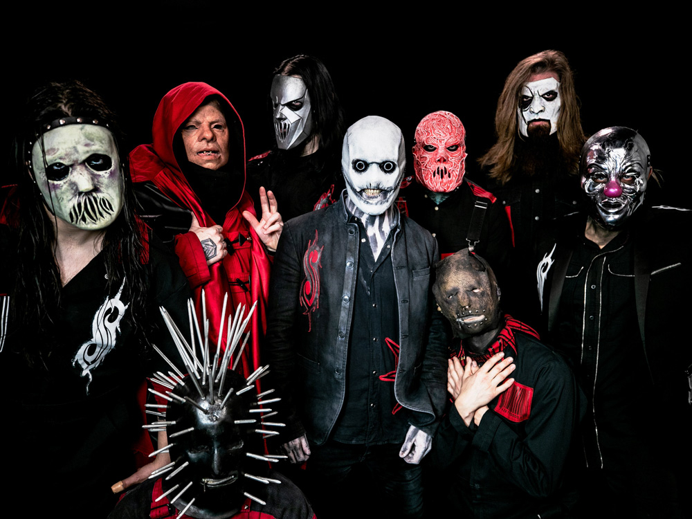

Slipknot — американская группа из Айовы, созданная в 1995 году.
Известны своим уникальным стилем — смесью ню-метала, экстремального металла и хаоса на сцене.
Их яркая и мрачная визуальная эстетика, а также мощная музыка принесли группе мировую популярность.

Тексты песен пронизаны гневом, нигилизмом, но они энергичные и вселяют уверенность.
Примеры песен:
Официальный сайт группы: